6 How-to’s
This chapter contains various step-by-step instructions on how to perform best practices using the analyses in the ‘Audit Sampling’ section of the module.
6.1 Extending a sample selected with a fixed interval
If you have selected a sample using a fixed interval and need to extend it because your population has become larger, follow these steps to manually create a selection counter column. Click the ‘+’ icon next to the dataset and select ‘Compute column’.
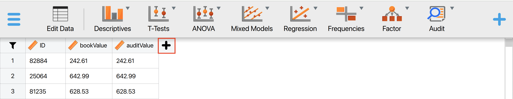
Next, name the new column (for example, ‘Selected_for_sample’), then click the R icon, followed by the ‘scale’ icon, and click on ‘Create column’. This will open an editor where you can input the necessary R code.
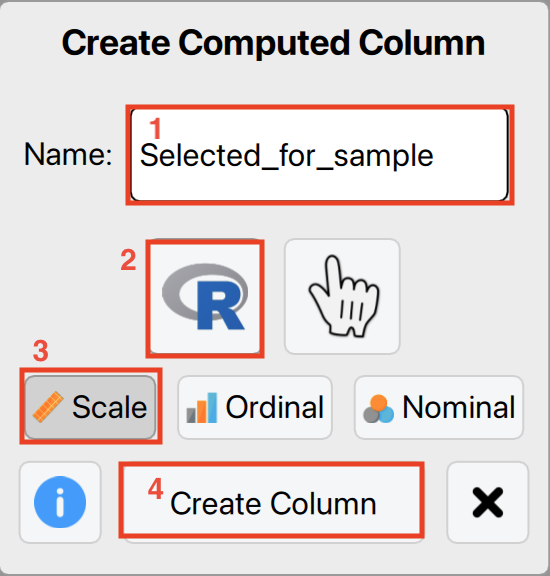
Copy and paste the following R script into the editor, ensuring that you replace the first three lines with the appropriate values for your dataset. The interval represents the fixed interval size, start defines the starting point within the first interval, and book_values should be replaced with the column name containing your book values.
interval <- ... # Specify the size of the fixed interval
start <- ... # Specify the starting point in the first interval
book_values <- ... # Enter the name of the column containing book values
# Do not change the code below
size <- sum(book_values) %/% interval; units <- start + interval * (0:(size - 1)); cumsum_values <- cumsum(book_values)
items <- rep(0, size)
for (i in 1:size) items[i] <- which(units[i] <= cumsum_values)[1]
result <- rep(0, length(book_values)); counts <- table(items); indices <- as.integer(dimnames(counts)[[1]]); result[indices] <- as.numeric(counts)
resultFor example, if you are selecting with an interval of €15,000 and a starting point of 1, you should enter the following values.
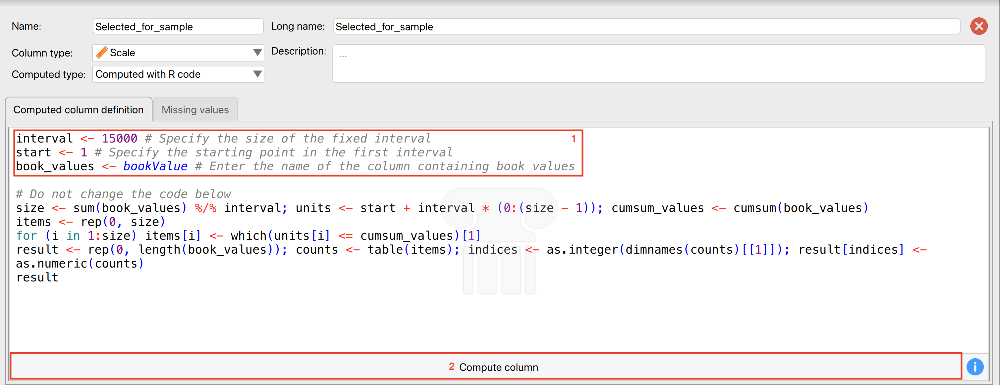
If you later extend your dataset by adding new data, you must re-run the computed column to update the selection while maintaining the same interval (e.g., €15,000).
6.2 Configurating and locking default options
You can launch JASP with a configuration file to set restrictions, disable, or hide certain options from users. This is particularly useful for deploying JASP for Audit within your organization, ensuring control over the options available to less statistically experienced users.
The configuration file type is .toml. The example .toml file below sets the likelihood in the classical planning analysis to the Poisson distribution and locks the option, preventing it from being changed. Additionally, it specifies the increment (the option name in the QML file is ‘by’) as 1 and the maximum sample size (the option name in the QML file is ‘max’) as 2,000 instead of the default 5,000.
Format = "0.1.0"
JASPVersion = "0.19.3"
EnabledModules = ["jaspAudit"]
[Modules.jaspAudit.Analyses.auditClassicalPlanning.Options]
likelihood = {Value = "poisson", Lock = true}
by = {Value = 1, Lock = true}
max = {Value = 2000, Lock = true}To load this config file into JASP, go to ‘Preferences’ in the left menu, then ‘Advanced’, and click ‘Use a configuration file’ in the ‘Configuration File Options’ box. Select the location of your config file and restart JASP for the changes to take effect.
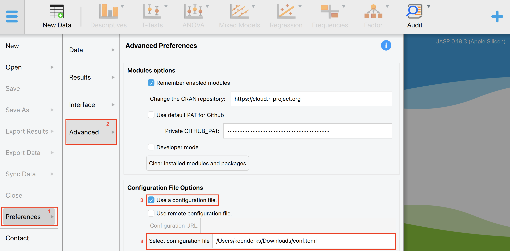
When you start the planning analysis, the options under advanced settings will be set to the corresponding defaults and cannot be changed by the user.
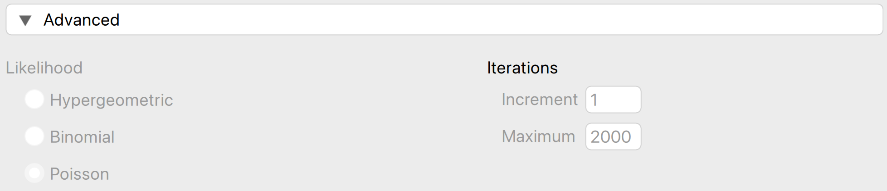
6.3 Bayesian optional stopping
The goal of Bayesian optional stopping is to monitor the evidence as it comes in and decide whether or not to continue data collection based on the evidence that has been observed. Instead of specifying a fixed sample size in advance, the auditor can monitor the evidence as it comes in. This means that you can sequentially expand and evaluate your sample, until you have sufficient evidence to draw a conclusion or until you are out of resources.
Let’s explore an example on how to perform Bayesian optional stopping in JASP. To follow along, open the ‘Testing for Overstatements’ dataset from the Data Library. Navigate to the top-left menu, click ‘Open’, then ‘Data Library’, select ‘7. Audit’, and finally click on the text ‘Testing for Overstatements’ (do not click the green JASP-icon).
6.3.1 Settings
First, you are going to select the maximum sample that you can afford to check based on your resources. Note that it is unlikely that you will need to check the entire sample. To select the sample, use the ‘Selection’ analysis from the ‘Audit Sampling’ menu.
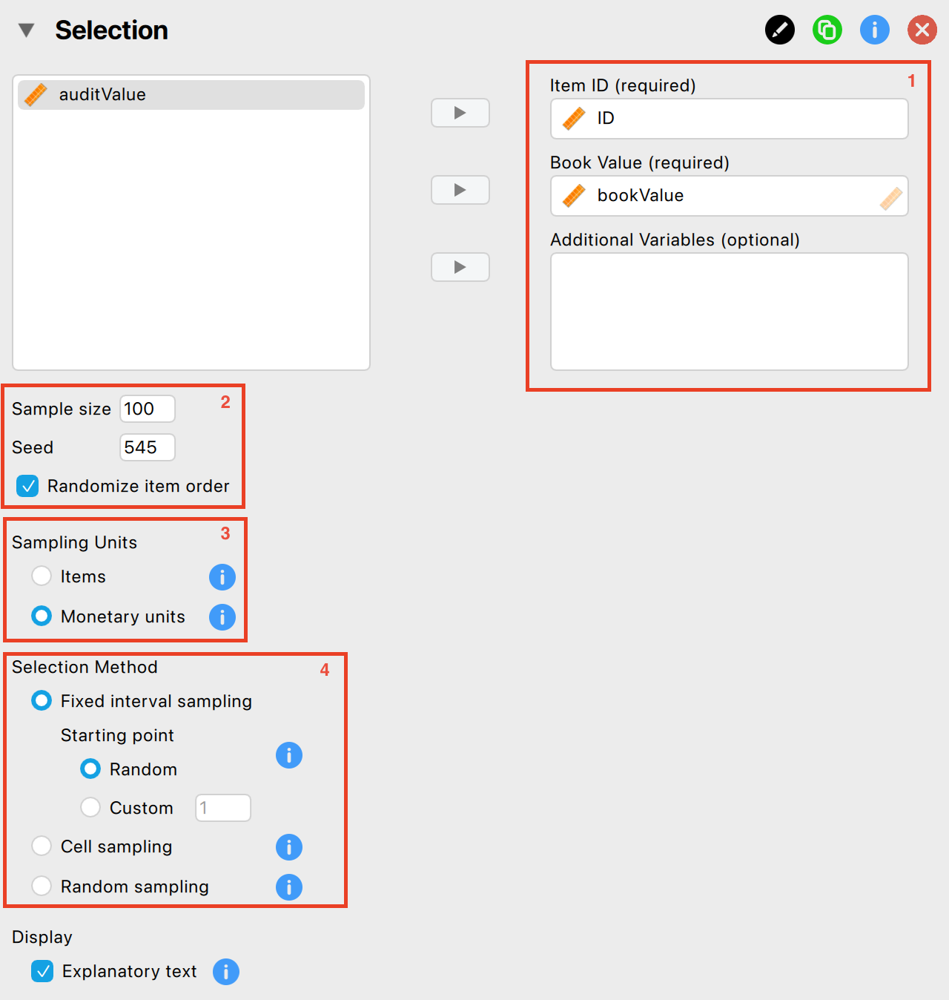
The following settings are required:
Indicate the variables: First, enter the variable indicating the identification numbers of the items in the corresponding box. Optionally, if you have access to the book values of the items, you can enter this variable as well.
Specify maximum sample size: Specify the number of sampling units you want to select from the population. Make sure to check the box for ‘Randomize item order’ as well to mitigate any biases that might arise from the original order of the data.
Sampling units: Specify the sampling units for the selection process. In this example, we are dealing with book values, so we choose ‘Monetary Units’.
Selection method: Choose a selection algorithm. In this example, we choose ‘Fixed Interval’ with a random starting point.
Now, we need to export the sample to a separate file. This way, we can fill in the true audit values for the sample one by one. The following settings enable you to isolate and export the selected items to a .csv file.
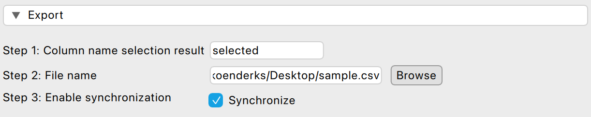
- Column name selection result: Enter the name of the column that will be added to the population file. This column will contain the results of the selection procedure, indicating whether the item is selected for the sample and how many times it is included.
- File name: Click ‘Browse’ to choose a location on your computer where you want to save the sample list.
- Enable synchronization: Finally, click on this setting to create the .csv file on your computer. When this setting is enabled, any changes you make to the sample by adjusting settings in the interface will be immediately reflected in the .csv file. If you prefer not to have this automatic update, uncheck this box after enabling it initially.
After applying these settings, you should find the resulting .csv file saved on your computer.
Now, you can start filling in the audit values that correspond to the bookvalues selected in your sample. Load the exported sample file by navigating to ‘File’ > ‘Open’ and selecting the .csv file you saved on your computer. This should look as follows:
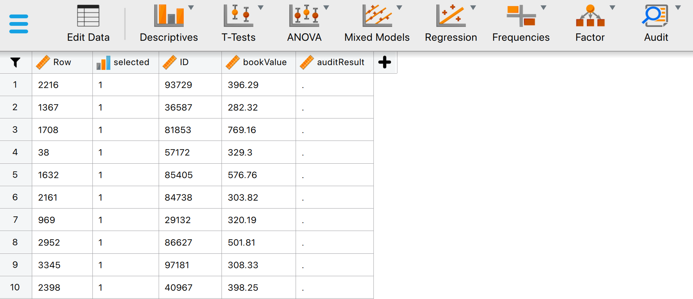
The data shows all the selected transactions in the sample, including their row numbers, IDs and bookvalues. The column for auditResult is still empty. This column is to be filled by the auditor. To start filling in this column, you can click on ‘Edit Data’. This brings you into the following panel.
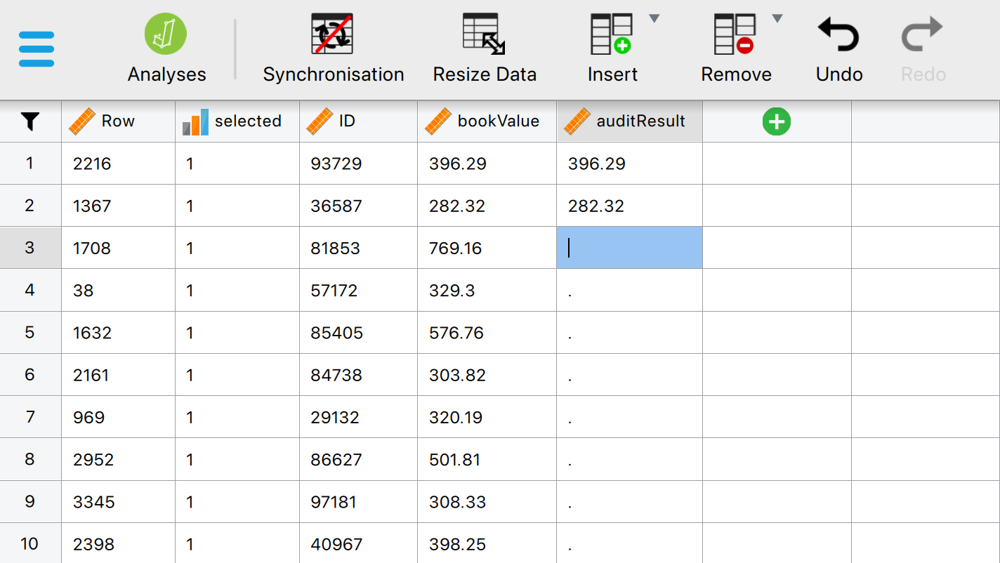
In this panel, you can manually fill in the correct audit value. Bayesian optional stopping allows you to decide, at any moment, whether to continue or stop filling in correct audit values. To make this decision, you can use the ‘Bayesian Evaluation’ section:
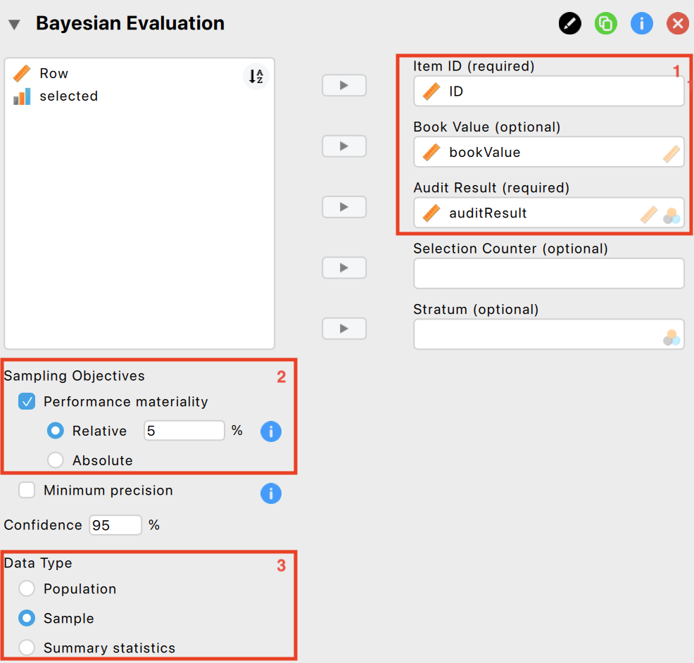
The following settings are required:
Variables: Begin by entering the variable that contains the identification numbers for the items into the ‘Item ID’ field. Then, input the variables that hold the book values and audit (true) values of the items into their respective fields.
Performance materiality: Input the performance materiality either as a percentage (relative) or as a monetary amount (absolute). For this example, we choose a performance materiality of 5%
Data type: Indicate the type of data you are working with. Here, we are working with sample data.
Furthermore, the prior needs to be specified:
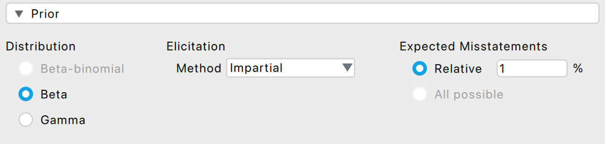
Impartial prior: Select the impartial prior as a prior for the evaluation by expanding the ‘Prior’ section and selecting ‘Impartial’ under ‘Elicitation method’.
Expected misstatement rate: Specify the expected misstatement rate to underlying the impartial prior distribution. For this example, we assume that the expected misstatement rate is 1%.
Finally, we want the output to show the sequantial analysis plot:
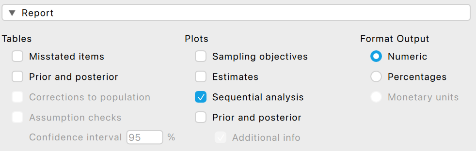
Sequential analysis: Expand the ‘Report’ section and select the checkbox for sequential analysis. This will produce a figure showing the Bayes factor as a function of the sample size in the output.
6.3.2 Output
The output shows the results of the audit values you have filled out so far. Hence, we see that the sample size is 2, and no misstatements were found in this sample. The Bayes factor provides an indication of the amount of evidence has been observed. A \(BF_{-+}\) of 1.194 indicates that the data are 1.194 times more likely under \(H_-\) (the misstatement in the population is lower than the performance materiality) than under \(H_+\) (the misstatement in the population is higher than the performance materiality).
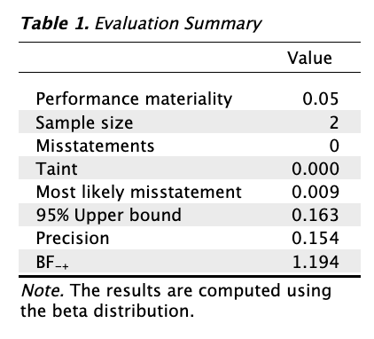
Furthermore, the output shows a figure that depicts the Bayes factor (\(BF_{-+}\)) as a function of the sample size (\(n\)). This figure illustrates how the evidence for the hypothesis \(H_-\) versus the hypothesis \(H_+\) accumulates. Here, we see that over the course of the small sample that we have collected, the Bayes factor has increased slightly.
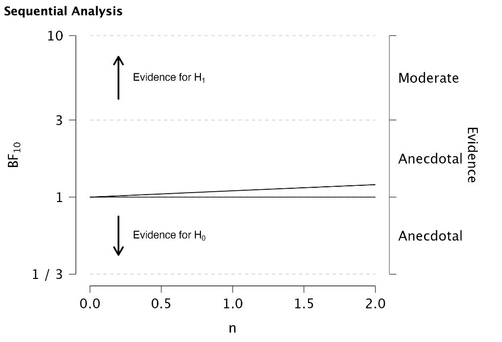
Based on the output of the Bayesian evaluation, you can decide whether you want to continue or terminate data collection. Mensink et al. (2024) describe an approach to formulate Bayes factor thresholds for terminating data collection. For example, if you use an impartial prior and your allowable risk of incorrect acceptance is 5%, this leads to a Bayes factor threshold of 19. As soon as the Bayes factor exceeds 19, you can approve the population of book values, with no more than 5% risk that this conclusion is incorrect. As this threshold is not yet reached for our example, we need to continue data collection.
To continue data collection, go back to the ‘Edit Data’ menu, check more items and fill out more audit values. You can switch between checking items and evaluating your sample as often as you like. When you have sufficient evidence to support your conclusion, you can terminate data collection.
In this example, after checking 45 book values that were selected in the sample and filling in their corresponding audit values (all were correct, except for the 13th invoice which contained a small taint) the output looks as follows.
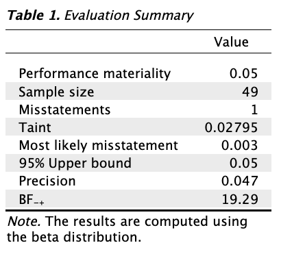
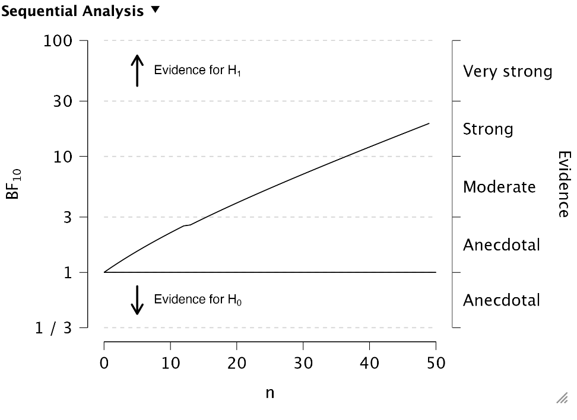
The Bayes factor is higher than 19, which means we can approve the population of book values with no more than 5% risk that this conclusion is incorrect.